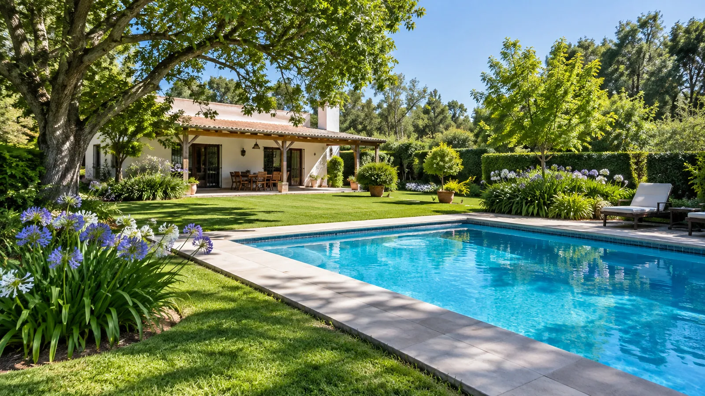
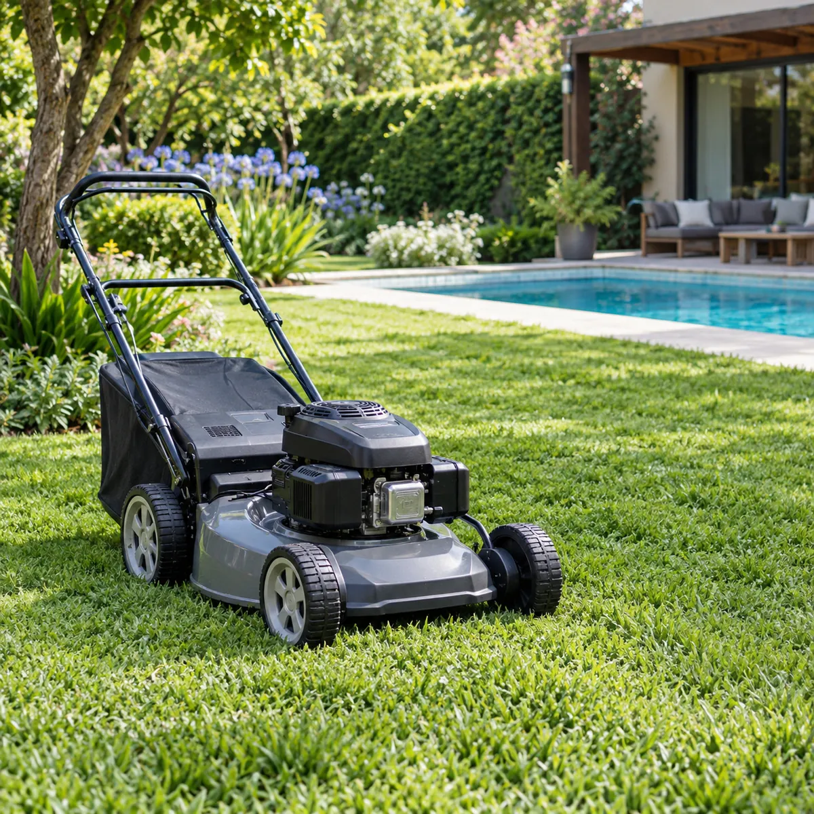
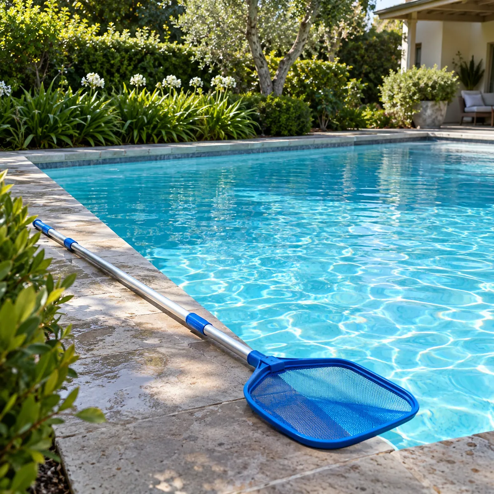
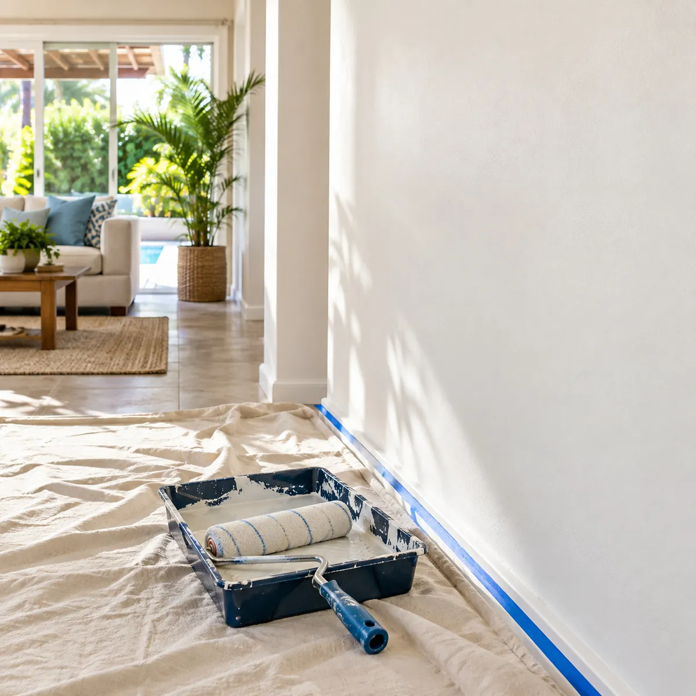
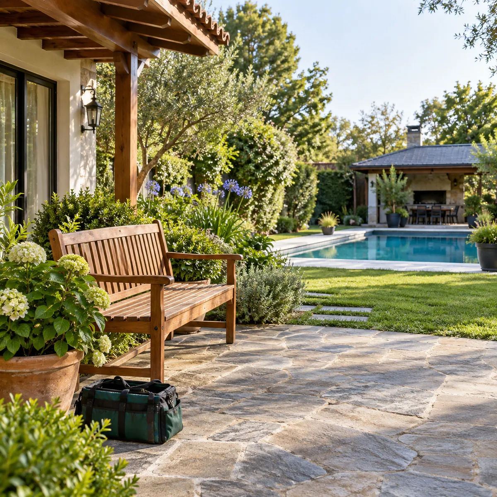
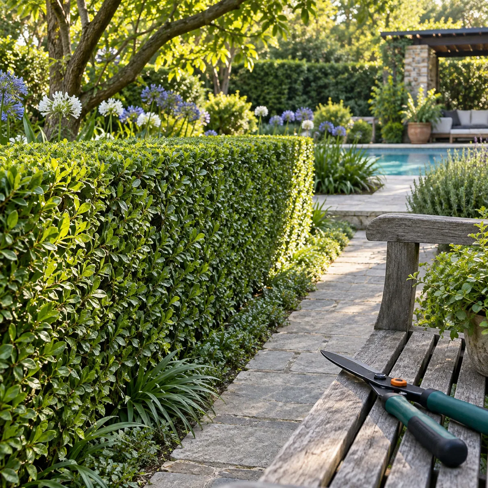
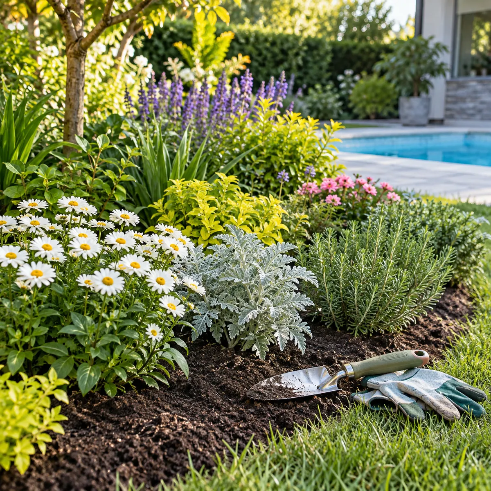
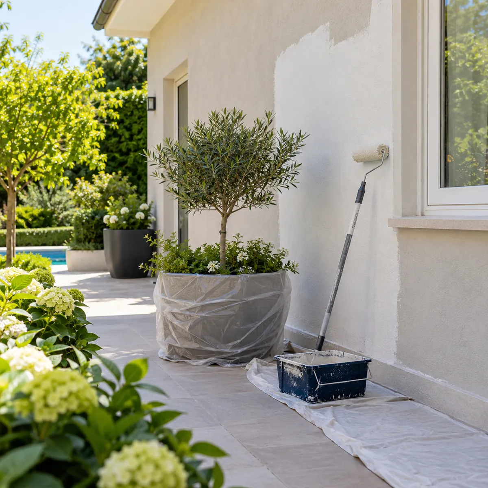
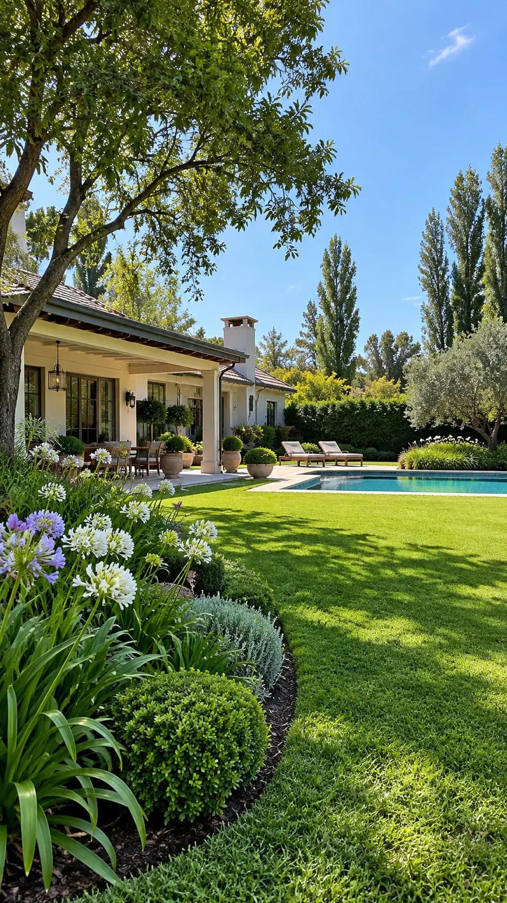

Mantenimiento general · Zona Oeste
Cuidamos tu jardín, tu pileta y tu casa.
Corte de césped, parquizados, podas, limpieza de piletas y pintura: todo el mantenimiento de tu quinta con un solo equipo.
Todo el mantenimiento, con un solo llamado.
El jardín, la pileta y la casa, en manos del mismo equipo.

Jardín
Césped corto, cercos prolijos y canteros sanos todo el año.
- Corte de césped y bordes
- Parquizados y canteros
- Poda de ligustrinas y cercos
- Extracción de cañaverales
Temporada fuerte · septiembre a abril
Consultar por jardín
Pileta
Agua limpia y equipo en orden, desde la puesta a punto hasta el fin de temporada.
- Limpieza de hojas y fondo
- Control del agua
- Puesta a punto para el verano
- Instalación y service de luces
Puesta a punto · octubre y noviembre
Consultar por pileta
Pintura
Interiores, frentes y exteriores, para que la casa acompañe al jardín.
- Pintura de interiores
- Frentes y paredes exteriores
- Preparación de superficies
Exteriores · otoño y primavera
Consultar por pintura
Quinta y hogar
Los arreglos de todos los días, para que la casa esté siempre a punto.
- Arreglos generales de la casa
- Instalación y service de luces de jardín
- Limpieza y despeje de fondos
Todo el año
Consultar por la casaAsí queda una quinta cuidada.
Imágenes ilustrativas de los servicios.




Calendario de la quinta
¿Qué pide tu quinta este mes?
Elegí el mes y lo que tenés en casa: te mostramos qué conviene hacer y lo pedís por WhatsApp.
Noviembre en tu quinta
Se viene el verano: pileta a punto y césped cada semana.
Jardín
- Corte de césped cada 7 a 10 días y bordes
- Recorte de cercos y canteros de verano
Pileta
- Puesta a punto y primeras limpiezas semanales
- Instalación y service de luces de pileta
Casa
- Pintura exterior y luces de jardín
Orientativo: en la visita lo ajustamos a tu quinta.
Elegí al menos jardín, pileta o casa.
Pedir esta cotizaciónAsí nos llega: Hola El Semillero! Quiero cotizar el mantenimiento de noviembre para mi casa.
Para: jardín, pileta y casa.
Me interesa: corte de césped cada 7 a 10 días y bordes; recorte de cercos y canteros de verano; puesta a punto y primeras limpiezas semanales; instalación y service de luces de pileta; pintura exterior y luces de jardín.
Frecuencia: a definir.
Cuatro pasos y la quinta en orden.
- 01
Nos escribís
Contanos por WhatsApp qué necesitás y, si podés, mandá fotos del lugar.
- 02
Vamos a verlo
Coordinamos una visita para ver el jardín, la pileta o la casa.
- 03
Cotización sin cargo
Te pasamos el presupuesto detallado, sin costo y sin compromiso.
- 04
Manos a la obra
Hacemos el trabajo y, si querés, seguimos con el mantenimiento periódico.
Dudas antes de pedir la cotización.
Y si te queda alguna, escribinos: te contestamos por WhatsApp.
¿En qué zona trabajan?
En Zona Oeste del Gran Buenos Aires. Si estás en otra localidad, escribinos igual y te decimos si llegamos.
¿La cotización tiene costo?
No. Te cotizamos sin cargo: nos contás qué necesitás y te pasamos el presupuesto.
¿Hacen trabajos puntuales o mantenimiento periódico?
Las dos cosas: un corte o una poda puntual, o visitas cada 15 días o cada mes para tener la quinta siempre al día.
¿Qué conviene mandar para cotizar más rápido?
Fotos del lugar, la localidad y, si la sabés, una medida aproximada del terreno o de la pileta. Con eso ya podemos orientarte.
¿Hacen luces de jardín y de pileta?
Sí: instalación y service de luces de jardines y piletas.
Cotización sin cargo
Contanos qué necesita tu quinta.
Mandanos fotos del jardín, la pileta o la pared y te respondemos con la cotización.
- 11 6562-2235
- @elsemillero26
- Zona Oeste · Gran Buenos Aires